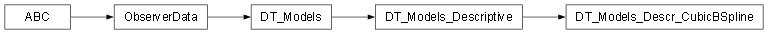

Models package¶

Submodules¶
Models.DT_Models module¶
Copyright (C) 2026 : Milad Zahediyami
This program is free software: you can redistribute it and/or modify it under the terms of the GNU General Public License as published by the Free Software Foundation, either version 3 of the License, or (at your option) any later version.
This program is distributed in the hope that it will be useful, but WITHOUT ANY WARRANTY; without even the implied warranty of MERCHANTABILITY or FITNESS FOR A PARTICULAR PURPOSE. See the GNU General Public License for more details.
You should have received a copy of the GNU General Public License along with this program. If not, see <http://www.gnu.org/licenses/>.
author Milad Zahediyami (milad.zahediyami@u-bordeaux.fr) IMS (UMR CNRS 5218 / University of Bordeaux)
DT_Models.py
Base class for all Models in the Digital Twin system. Implements ObserverData so it can react to changes in DT_Data.
- class Models.DT_Models.DT_Models[source]¶
Bases:
ObserverData
Models.DT_Models_Descr_CubicBSpline module¶
Copyright (C) 2026 : Milad Zahediyami
This program is free software: you can redistribute it and/or modify it under the terms of the GNU General Public License as published by the Free Software Foundation, either version 3 of the License, or (at your option) any later version.
This program is distributed in the hope that it will be useful, but WITHOUT ANY WARRANTY; without even the implied warranty of MERCHANTABILITY or FITNESS FOR A PARTICULAR PURPOSE. See the GNU General Public License for more details.
You should have received a copy of the GNU General Public License along with this program. If not, see <http://www.gnu.org/licenses/>.
author Milad Zahediyami (milad.zahediyami@u-bordeaux.fr) IMS (UMR CNRS 5218 / University of Bordeaux)
DT_Models_Descr_CubicBSpline.py
Cubic B-Spline model for interpolating sine wave data. This is the core “Digital Model” component of the Digital Twin. It reacts to new sine data and can trigger service updates.
- class Models.DT_Models_Descr_CubicBSpline.DT_Models_Descr_CubicBSpline(step: float)[source]¶
Bases:
DT_Models_Descriptive- add_service_2_be_updated(srv)[source]¶
Links a diagnosis service that this model can notify directly.
- Parameters:
srv – The diagnosis service to be linked.
- get_sine_model_value(x: float) float[source]¶
Returns the sine model value at position x (simplified implementation). In a real DT, this could be a proper B-Spline interpolation.
- Parameters:
x – Input value.
- Returns:
Computed model value (here simply sin(x)).
Models.DT_Models_Descriptive module¶
Copyright (C) 2026 : Milad Zahediyami
This program is free software: you can redistribute it and/or modify it under the terms of the GNU General Public License as published by the Free Software Foundation, either version 3 of the License, or (at your option) any later version.
This program is distributed in the hope that it will be useful, but WITHOUT ANY WARRANTY; without even the implied warranty of MERCHANTABILITY or FITNESS FOR A PARTICULAR PURPOSE. See the GNU General Public License for more details.
You should have received a copy of the GNU General Public License along with this program. If not, see <http://www.gnu.org/licenses/>.
author Milad Zahediyami (milad.zahediyami@u-bordeaux.fr) IMS (UMR CNRS 5218 / University of Bordeaux)
DT_Models_Descriptive.py
Intermediate class for descriptive/statistical models. Currently serves as a hierarchy placeholder.